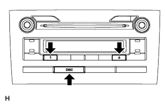
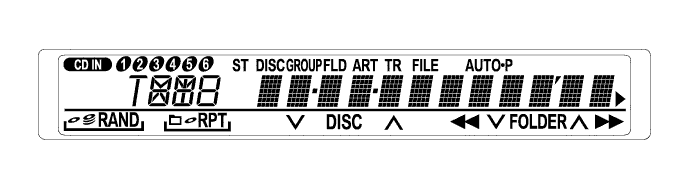
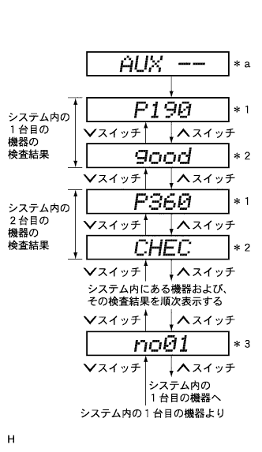
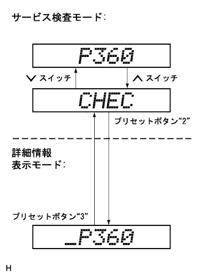
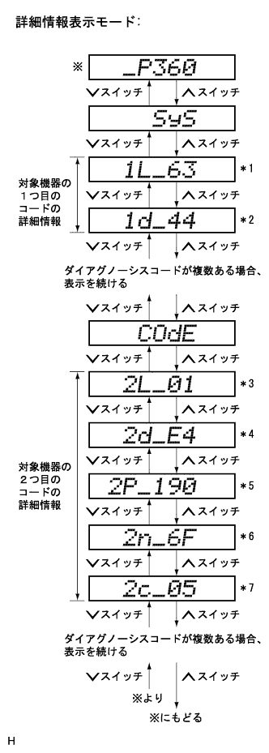

Audio System Diagnosis System |
 |
With the audio OFF and ACC ON (IG switch ACC), while pressing preset buttons "1" and "6" simultaneously, press the "DISC" switch 3 times.

Check that there is no abnormality in element lighting.
Check that the buzzer sounds when each panel switch is pressed.
Press the "SEEK/TRACK UP" switch in all element lighting mode.
Press and hold the "DISC" switch for 2 seconds or more. Or, turn the IG OFF.
 |
Operate the "DISC/TRACK" switch to display the inspection results for each device connected to the system
Operate the "SEEK/TRACK" switch and check that the connected devices below are displayed.
| Physical Address | Part Name |
|---|---|
| 190 | Radio Receiver Assembly |
Operate the "SEEK/TRACK" switch and check the inspection results for each device connected to the system.
| Term | Meaning |
|---|---|
| AUX Connection Detection (*a) | AUX terminal connection check (not connected on this model, so "--" is displayed) |
| Device Code (*1) | Physical address of the target device |
| Inspection Result (*2) | Collects the system inspection and diagnostic memory of the target device and displays the inspection results for the present and past device status in the following 6 types
|
| Connection Check Number (*3) | Displays the current connection check number |
| Term | Meaning |
|---|---|
| P | Symbol indicating a physical address |
| Physical Address | A 3-character symbol (expressed in base 16) assigned to each device making up the AVC-LAN, with a unique symbol set according to the function of the device |
| Display | Original Word | Meaning | Action |
|---|---|---|---|
| good | Good (Normal) | When no DTC is detected in either "System Check Confirmation" or "Diagnostic Memory Response" | - |
| nCon | No Connection (Not Connected) | When the system recognized the device at registration, but the device does not respond to the "Diagnosis ON Instruction" command | Inspect the power supply system and AVC-LAN communication wire harness of the device indicated by the device code (physical address) |
| ECHn | Exchange (Replace) | When "Diagnosis ON Confirmation" confirms that the device supports current diagnosis, and there are 1 or more DTCs subject to "Replace" in either "System Check Result Response" or "Diagnostic Memory Response" | Move to detailed inspection information display mode and inspect the malfunctioning area from the DTC chart |
| CHEC | Check (Inspect) | When "Diagnosis ON Confirmation" confirms that the device supports current diagnosis, and there are no DTCs subject to "Replace" but 1 or more DTCs subject to "Inspect" in either "System Check Result Response" or "Diagnostic Memory Response" | Move to detailed inspection information display mode and inspect the malfunctioning area from the DTC chart |
| OLd | Old (Old Version) | When "Diagnosis ON Confirmation" confirms that the device supports old diagnosis, and there is a DTC in either "System Check Result Response" or "Diagnostic Memory Response" | Move to detailed inspection information display mode and inspect the malfunctioning area from the DTC chart |
| nrES | No Response (No Response) | When there is no response to any of the commands "System Check Start Instruction", "System Check Result Request" or "Diagnostic Memory Request" | Inspect the power supply system and AVC-LAN communication wire harness of the device indicated by the device code (physical address) |
To perform the service inspection again, press preset button "1".
 |
With "CHEC" or "ECHn" displayed, press preset button "2" to enter detailed information display mode.
 |
Operate the "SEEK/TRACK" switch to display the "System Check Result (SyS)" and "Diagnostic Memory Response Result (COdE)".
Check the system check result.
| Term | Meaning |
|---|---|
| DTC Number | Serial number assigned to the DTCs occurring for each device code |
| Logical Address (*1) | A 2-character symbol (expressed in base 16) assigned to each function (unit) making up the inside of the target AVC-LAN device, set for each function unit (L is a symbol indicating a logical address) |
| DTC (*2) | DTC (d is a symbol indicating a DTC) |
Check the diagnostic memory response result.
| Term | Meaning |
|---|---|
| DTC Number | Serial number assigned to the DTCs occurring for each device code |
| Logical Address (*3) | A 2-character symbol (expressed in base 16) assigned to each function (unit) making up the inside of the target AVC-LAN device, set for each function unit (L is a symbol indicating a logical address) |
| DTC (*4) | DTC (d is a symbol indicating a DTC) |
| Sub-code (*5) | Physical address stored together with the DTC ("---" is displayed if there is no address information) (P is a symbol indicating a physical address) |
| Connection Check Number (*6) | Connection check number stored together with the DTC (displayed in base 16) ("--" is displayed if there is no connection check number information) (n is a symbol indicating a connection check number) |
| Number of Occurrences (*7) | Number of times the same code has occurred, stored together with the DTC (displayed in base 10; if 9 times or less, 0 is added in the 10 digit) ("--" is displayed if there is no occurrence count information) (c is a symbol indicating the number of occurrences) |
Inspect the malfunctioning area from the DTC chart. (Refer to the procedure)
To return to service inspection mode, press preset button "3".
While "ECHn" (Replace) is displayed in service inspection mode, or in detailed information display mode, press and hold preset button "5" for 2 seconds or more.
After repairing the malfunctioning area, start diagnostic mode.
Press and hold preset button "5" for 2 seconds or more. (Display is CLr)
Press preset button "1", perform the service inspection again, and check that no malfunction is displayed for any device code (physical address).